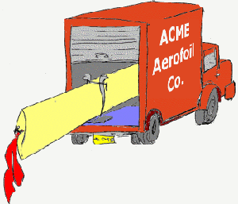

Pattern Shop
| This is where the models for the SNR wind tunnel are constructed. Several tools are available for producing aerofoil sections and three-dimensional wings. Select your required tool below. If you haven't got a key to access the machines then please see Doug in the Admin Office. | ||
| Tool #1 : NACA MILL 1 |
 |
This is the old NACA section milling machine. It cuts two dimensional section profiles based on the 4 or 5 digit family of aerofoils. These sections can be used as templates in the construction of three-dimensional wings or as stand alone two-dimensional section models for testing in the tunnel. |
| Tool #2 : HAND HELD SANDER and PLANER |
||
| Delivery Dock A: SUPPLY YOUR OWN AEROFOIL |
 | You can supply your own aerofoil section. The section surface co-ordinates should follow the same convention as is used in the output from the old NACA milling machine. |

|

|

|